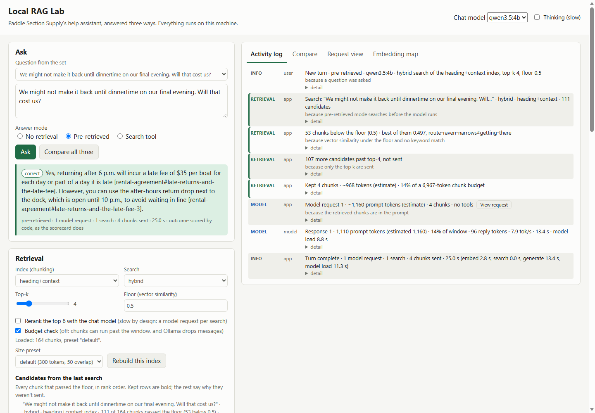
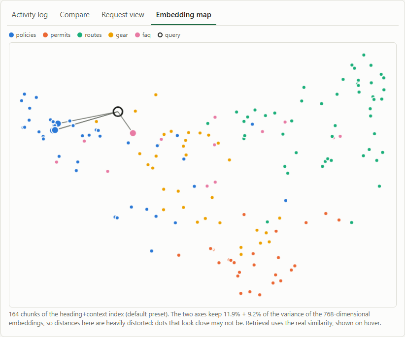
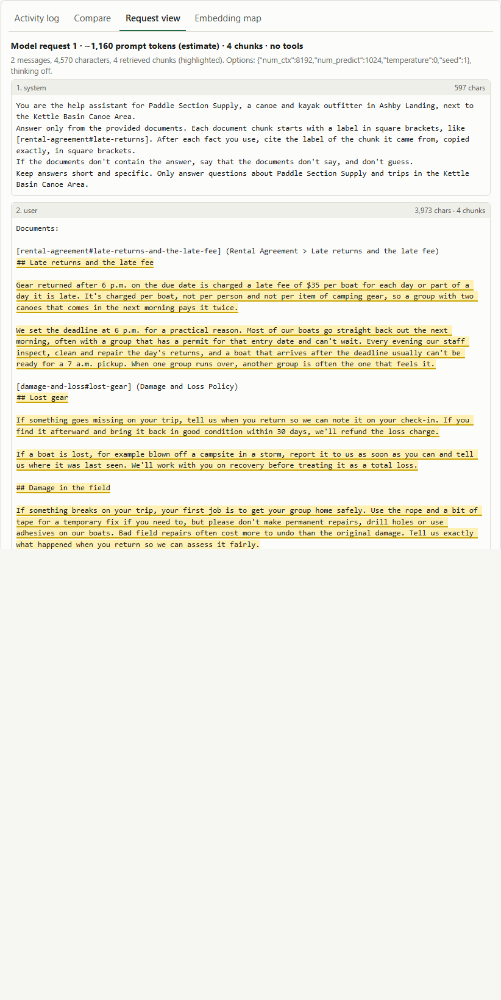
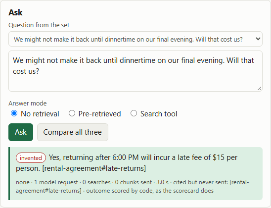

Local RAG Lab · how it works
How the RAG Lab works
From the big picture down to the lines that matter: how the documents become chunks and vectors, how one question finds them, what lands in the model's request, and how code decides whether the answer was right. Written so you can explain each part out loud.
The 60-second version
If you only read one section
It's a help assistant for an invented canoe outfitter, Paddle Section Supply, running on a small local model through Ollama. There is no API key and nothing leaves the machine. It answers customer questions from 25 documents: rental terms, rate sheets, permit rules, route guides, gear guides and FAQs.
Before any question, the documents are cut into chunks, three different ways, and each chunk is turned into 768 numbers by an embeddings model. A question is turned into numbers the same way, and search compares it with every chunk, by meaning (vector), by words (keyword) or both (hybrid).
Every answer can be grounded three ways: no retrieval at all; pre-retrieved, where the app searches first and pastes the best chunks into the request; or a search tool the model calls itself. Both retrieval modes call the same MCP tool. The only difference is who makes the call.
Code, never a model, scores every answer against 30 questions with known answers, and every step is on screen: each candidate and its scores, why each unsent chunk was dropped, the exact request with the chunks highlighted inside it, and the tokens and seconds it all cost.
What you see and do
One page: the question and retrieval settings on the left, what happened on the right
Run npm run dev and open http://127.0.0.1:3400. On the left you ask: type a question or pick one of the 30 from the set, choose an answer mode, and press Ask, or Compare all three to run every mode. The retrieval panel below sets the index, search mode, top-k, similarity floor, rerank and budget check, and shows the candidate table for the last search. On the right, five tabs show what happened.

The activity log
One row per event, streamed as it happens. A level word colors each row (INFO, RETRIEVAL, MODEL, WARN, ERROR), and RETRIEVAL rows carry a green edge because they're what this lab is about. The actor column says whose decision each event was: app searched in pre-retrieved mode, model in search-tool mode. A "because" line says why, and the full detail (a request body, a candidate list) is one click away.
The request view
"View request" on a model request shows exactly what the model received, message by message, with every retrieved chunk highlighted at the place the app pasted it (Assembly).
The compare view
The three modes side by side as they stream in, each column ending in its answer, with a summary table on top: requests, searches and by whom, chunks sent, prompt tokens (real and estimated), the largest request's share of the window, time, citations, and the outcome for a question from the set.
The embedding map and the Document tab
The map draws every chunk as a dot and the question among them (Embeddings and the map). Clicking a chunk anywhere (its id in the candidate table, a highlight in the request view, a dot on the map) opens the Document tab: the chunk in place inside its whole source document, with the other chunks the search sent from that document underlined, so you can see what the chunker cut off around it.
The big picture
Four processes, two protocols, one machine
| Part | Job |
|---|---|
Browser (public/) | Plain TypeScript compiled in place, no framework. Sends a question with POST /api/ask or /api/compare and reads the log back as Server-Sent Events. Imports only types from shared/. |
App server (server/) | Express on 127.0.0.1:3400, Host and Origin checked on every /api request. Runs the answer modes, the budget, prompt assembly and the reranker. Talks to the chat model with plain fetch, so the logged request is the request on the wire. |
MCP tool server (tool-server/) | A separate process the app spawns and talks to over stdio, and the only code that reads corpus/ and the index files. Loads all three indexes at startup, embeds each query, and searches. It can also serve over HTTP on 3401 (npm run tool-server:http) for MCP Inspector. |
| Ollama | The local model server on 127.0.0.1:11434: qwen3.5:4b answers, nomic-embed-text embeds. At an 8,192-token window both stay loaded on a 4 GB GPU, so no question waits for a swap. |
| Terminal scripts | npm run ask, compare and eval call the same runTurn() as the UI, with a log sink in place of an HTTP response. A number in the scorecard came from exactly the code the UI shows running. |
The lab's subject is every byte that reaches the model, and the simplest way to be sure nothing else does is for nothing to leave the machine. Both models are files on disk, the corpus and its indexes are files on disk, and a cloud model name or a non-local Ollama address is refused before any request is made.
There is no authentication. The servers bind to localhost and check Host and Origin, because binding alone doesn't stop a web page you visit from calling a local port. The outfitter, its documents, products and places are invented; every domain is .example.
The life of one question
Pre-retrieved mode, from pressing Ask to the answer
The turn opens with a log row stating the mode, the model and every search setting, so each transcript explains itself.
server/modes/common.ts · Turn.start()The chunk budget is worked out: the 8,192-token window, minus the system prompt and the question, minus a 1,024-token reserve for the reply.
server/context/budget.ts · chunkBudget()The app calls
server/modes/pre-retrieved.ts · server/mcp/client.tssearch_docsover MCP with the question as the query. The log row's actor isapp: nobody asked the model.The tool server embeds the query with the
tool-server/search/search.tssearch_query:prefix, scores every chunk, runs BM25 if hybrid is on, fuses the rankings, and returns every candidate that passed the floor, with every score.The app picks what's sent: the top k in rank order, while they fit the budget. One row lists the chunks past top-k; each chunk over the budget gets its own row with the reason.
server/context/budget.ts · selectChunks()The prompt is assembled: each kept chunk under its label and heading path, before the question, with the character span of every chunk recorded.
server/context/assemble.ts · preRetrievedMessage()One model request, no tools. Logged going out with the estimated prompt tokens and the chunk spans, and coming back with Ollama's real count, the share of the window, and the time. The drop detector checks it.
server/modes/common.ts · Turn.callModel()Citations are checked: every
server/modes/common.ts · Turn.finish()[label]in the answer against the labels actually sent. A citation to a chunk that wasn't in the request is flagged.
Search-tool mode is the same machinery in a loop (The three answer modes); no-retrieval mode skips steps 2 to 6.
Chunking
A model only ever sees chunks, never documents
npm run index turns the 25 documents (26,586 words) into three indexes, one per chunking strategy, in about 8 seconds on the GPU. Where the cuts fall decides what retrieval can hand over intact.
| Strategy | Chunks | How it cuts |
|---|---|---|
| fixed | 148 | Every 300 estimated tokens with 50 of overlap, on word boundaries, wherever that lands: mid-sentence, mid-table |
| heading | 164 | Packs whole Markdown sections up to 300 tokens; cuts a section only when it's too big on its own, preferring a paragraph break, then a line break (so table rows stay whole), then a sentence end |
| heading+context | 164 | The same cuts as heading, but the text that gets embedded starts with the document title and heading path |
Packing whole sections was a change made during the build. Cutting at every heading made 307 tiny chunks averaging 116 tokens, so four of them carried a third as much text as four fixed chunks, and the strategies stopped being comparable.
The split-context trap
Three long sections in the corpus name their subject only in their heading; the answer is in a last paragraph that says "this fee", "it" or "they". Under heading that paragraph becomes a chunk that doesn't say what it's about. heading+context embeds it with its path:
Permit Rules > Day-use permits
…They cost nothing, you need only one per group, and they must be
carried in the boat for the whole trip.heading+context embeds for the day-use answer. For "Do day-use permits cost anything?" that chunk ranks #15 in hybrid search under heading, and #3 here.That difference is why heading+context is the default. The rule that chose it (highest hybrid hit@4, then MRR, then the preset nearest default) was written into scripts/eval-retrieval.ts before the first run.
Embeddings and the map
768 numbers per chunk, flattened to two for a picture
Each chunk becomes 768 numbers from nomic-embed-text. Two details apply to any embedding pipeline:
- Task prefixes. The model was trained to see
search_document:before a passage andsearch_query:before a question. With them, the late-fee question scored 0.911 against its answer instead of 0.873. - No silent truncation. By default Ollama cuts an over-long input and returns a vector of the part that fit, with HTTP 200 and no warning. The embedder sends
truncate: false, so that's an error instead.
body: JSON.stringify({ model, input: batch, truncate: false }),embed()PCA flattens the 768 dimensions to two, written out as power iteration, and the same projection places each question on the map at query time. The two axes keep about 21% of the variance, and the map says so under the picture: two dots that look close may not be. Retrieval never uses the map.

Search: vector, keyword, hybrid
A loop, a rebuilt query, and a merge by rank
Vector search is a loop
No vector database: every chunk is scored against the query, in memory. For 164 chunks it takes well under a millisecond.
export function rankByVector(query: Float32Array, vectors: readonly Float32Array[]): Ranked[] {
return vectors
.map((vector, index) => ({ index, score: cosineSimilarity(query, vector) }))
.sort((a, b) => b.score - a.score || a.index - b.index)
.map((entry, i) => ({ ...entry, rank: i + 1 }));
}Scores mean less than they look. Across nine probe questions, the chunk holding the answer scored as low as 0.587, while the median chunk for another question scored 0.613, and a question the corpus can't answer at all still had a best match of 0.748. So the similarity floor, 0.50, is a noise cut, not a relevance test. No floor can tell you the answer isn't there.
Keyword search rebuilds the query
SQLite's FTS5 ranks matches with BM25, but raw text can't go to MATCH: EP-14 throws "no such column: 14" and a trailing ? is a syntax error. Common words and stray letters are dropped, then every remaining word is quoted:
const match = terms.length === 0 ? null : terms.map((t) => `"${t.replace(/"/g, '""')}"`).join(" OR ");"about" OR "ep-14", and the log shows both.Hybrid search merges ranks, not scores
A cosine of 0.71 and a BM25 of −4.2 aren't on the same scale, so the two rankings are merged by reciprocal rank fusion: a chunk at rank r in a list earns 1 / (60 + r) from it.
export function reciprocalRankFusion(lists: readonly (readonly Ranked[])[], k: number = RRF_K): Ranked[] {
const fused = new Map<number, number>();
for (const list of lists) {
for (const { index, rank } of list) fused.set(index, (fused.get(index) ?? 0) + 1 / (k + rank));
}
return [...fused]
.map(([index, score]) => ({ index, score }))
.sort((a, b) => b.score - a.score || a.index - b.index)
.map((entry, i) => ({ ...entry, rank: i + 1 }));
}A chunk both searches like beats a chunk only one search loves. That's the design, and it's also hybrid's failure mode here: for "Can our pup come along on the trip?", vector search ranks the dog answer #1, keyword #89, hybrid #13, because "trip" matches most of the corpus and dozens of mediocre chunks appear in both lists. Hybrid still wins where it was meant to, on exact codes and split context. The lab leaves the failure visible rather than tuning it away.
The floor applies only to chunks vector search alone found. In hybrid mode a chunk is dropped only if it's below the floor and keyword search missed it, so a code that BM25 finds survives a low vector score.
Selection and the context budget
Every chunk not sent gets a reason
The tool server returns every candidate that passed the floor, often 130 to 160. The app keeps the top k in rank order while they fit the chunk budget, and logs what it drops:
retrieval app Search: "What's the fee if we bring the canoe back a day late?" · hybrid · heading+context · 161 candidates
retrieval app 3 chunks below the floor (0.5) · best of them 0.491, stove-and-fuel#setting-up
retrieval app 157 more candidates past top-4, not sent
retrieval app Kept 4 chunks · ~838 tokens (estimate) · 12% of a 6,974-token chunk budgetnpm run ask prints them.Token counts before a request are estimated at characters ÷ 4 and labeled as estimates; Ollama's real count comes back afterward, and each model-request row shows both. Without tools the estimate lands within about 15%; with the search tool offered it undercounts by 150 to 450 tokens, because the chat template renders a tool definition into more tokens than its JSON size.
When a request does outgrow the window, Ollama drops whole messages and reports nothing. The only trace is a prompt-token count smaller than the text that was sent:
if (messageEstimate > 500 && prompt < messageEstimate * DROP_RATIO) {
this.summary.droppedMessages = true;Turn.callModel(). Compared with the message text only, never the tool definitions, which chat templates move around.Assembly: RAG is prompt construction
The model doesn't know the documents; the app pastes them in
Each kept chunk is written into the request as plain text under a header line, and the app records the character span of every chunk it writes:
export function chunkHeader(c: Pick<Candidate, "label" | "headingPath" | "docId">): string {
return `${c.label} (${c.headingPath.length > 0 ? c.headingPath.join(" > ") : c.docId})`;
}
The system prompt asks the model to cite a chunk's label after each fact, and the app checks every cited label against the labels it actually sent. qwen sometimes garbles long labels, and once invented a plausible one; both are caught.
The three answer modes
Who retrieves, and what it costs
| Mode | How it works |
|---|---|
| No retrieval | The same system prompt and the question, with no documents. Told to answer only from documents, qwen declined 28 times out of 30. The other two times it invented, fluently, with a citation. |
| Pre-retrieved | The app searches with the user's exact words, keeps what fits, and makes one request with no tools. It always pays for the chunks, and gets one try at retrieval. |
| Search tool | The model is offered search_docs with only a query parameter (the retrieval panel sets the rest) and loops: it searches, the app sends back the chunks that fit the remaining budget, and it answers or searches again, up to four requests. |

Search-tool mode can rewrite a question into a better search ("pup dog pet allowed on trip"), and it can also decline to search at all:

Reranking
Optional, off by default, slow by design
Search ranks chunks by similarity to the query, which isn't the same as how well they answer it. With rerank on, the chat model reads the question and the top 8 candidates together and scores each 0 to 3, in one request whose reply shape is enforced by a JSON Schema. A malformed reply keeps the search order and says so; there's no silent retry. Measured: hits in the top 4 rose from 21 to 23 of 27, none lost, at 3.9 seconds per search.
if (parts.tools && parts.format) throw new Error("A request can't carry both tools and a format: format stops tool calling.");buildRequest(). The reranker's request carries a format and never tools.Scoring
Code, never a model
The 30 questions each list the passages that hold the answer and the facts an answer must contain. Retrieval is a hit when a chunk from the right document contains a whole gold passage; a passage cut across two chunks counts as a miss, on purpose. Multi-hop questions need every passage. Each answer gets exactly one outcome by string matching, checked in a fixed order: correct, then conflict-flagged (stale questions only), then declined, then invented. Digits never match loosely: "$35" isn't "$350".
| Mode | Correct | Declined | Invented | Avg prompt tokens | Avg time |
|---|---|---|---|---|---|
| No retrieval | 0 | 28 | 2 | 164 | 1.6 s |
| Pre-retrieved | 20 | 7 | 2 | 1,229 | 5.1 s |
| Search tool | 21 | 6 | 1 | 2,091 | 8.2 s |
The remaining answers flagged that the 2025 and 2026 rate sheets disagree. With every needed chunk in the prompt, 40 of 43 answers across both retrieval modes were correct and none invented. The stale rate sheet and the three multi-hop questions beat every mode: qwen never searched twice in 30 questions.
Whether an answer declines is decided by a list of phrases, frozen before any answer existed. A hand audit of all 42 answers it classified found two mistakes, both in no-retrieval mode; they're recorded beside the scorecard (and counted above) rather than fixed after the fact. A second full run matched the first on 89 of 90 answers.
Things that bite
Found while building, and written down where the code meets them
think, every time
qwen3.5:4b reasons by default: a one-sentence question once spent 1,500 tokens, about 2.5 minutes, thinking without reaching an answer. So every request goes through buildRequest(), which always sends think, num_ctx, a reply cap, temperature 0 and a seed, and streams the reply, because a long non-streamed request ran past Node's 5-minute fetch timeout.
return {
model: parts.model,
messages: parts.messages,
...(parts.tools ? { tools: parts.tools } : {}),
...(parts.format ? { format: parts.format } : {}),
think: parts.think === true,
stream: true,
options: { num_ctx: ollamaConfig().numCtx, num_predict: NUM_PREDICT, temperature: 0, seed: 1 },
};buildRequest()Close to repeatable, not exactly
Temperature 0 and a fixed seed narrow the variation without removing it. Two full answer passes agreed on 89 of 90 answers; the one that differed was whether the model chose to call the search tool, on an identical request.
Rebuilding an index on Windows
The tool server holds every index file open, and Windows won't let a build rename a new file over an open one. The rebuild route stops the tool server first, refuses questions until the build ends, and lets the next question start a fresh tool server with the new index.
A gold span longer than the overlap
An early gold passage of 336 characters straddled a fixed chunk boundary and counted as a miss, which measured the passage's length rather than the strategy. Spans are now capped at 100 characters, the smallest preset's overlap, and npm run eval -- --check enforces it.
Explaining it
The points to get across
- RAG is prompt construction. The model doesn't know the documents; the app pasted text into the request, and the request view shows exactly where.
- Retrieval quality caps answer quality. With every needed chunk in the prompt the model was right 40 times out of 43 and never invented; every invented answer came from a prompt missing part of the answer.
- Classic and agentic RAG differ in who makes the call. Same tool, same code; the log's actor column shows the difference, and the scorecard shows what each costs.
- Chunking decides what can be retrieved intact. A paragraph that says only "they cost nothing" needs its heading to be found.
- Hybrid search is a trade, not an upgrade. It wins on exact codes and split context, and buried a paraphrase under a common word.
- A similarity score can't tell you the answer isn't there. Only the answer step can decline.
- Context is a budget. Every chunk not sent is logged with its reason, and a silently overfull window is caught.
- A stale document is invisible to retrieval. Nothing marked the 2025 rates as old, and nothing in search could know.
- Be honest about the numbers. One run of 30 questions, defaults chosen on the same questions, a frozen scorer audited by hand.
- Everything is visible. If something happens and the UI doesn't show it, that's a bug.
Key terms
As used in this project
- Chunk
- A piece of a document, cut by a chunking strategy. The unit that gets embedded, searched and pasted into a request.
- Embedding
- 768 numbers from
nomic-embed-textthat place a text where similar meanings sit close together. - Cosine similarity
- How closely two embeddings point the same way; vector search's score.
- BM25
- The keyword ranking SQLite's FTS5 uses: rarer words and shorter chunks count for more.
- Reciprocal rank fusion
- Merging rankings by rank alone: 1 / (60 + rank) from each list a chunk appears in.
- Floor
- The minimum similarity for a chunk only vector search found (0.50). A noise cut, not a relevance test.
- Top-k
- The most chunks sent to the model per search (4 by default).
- Window
num_ctx, the model's whole context: 8,192 tokens.- Chunk budget
- The part of the window left for chunks after everything else and a reply reserve.
- Gold span
- A passage of corpus text, at most 100 characters, that holds a question's answer.
- Hit@k
- Every hop of a question has a gold span inside one of the top k chunks.
- Hop
- One piece of evidence a question needs; multi-hop questions need two or more.
- Stale index
- An index built from an older corpus than the one on disk; reported, not hidden.
- Rerank
- The chat model scoring the top 8 candidates against the question, 0 to 3.